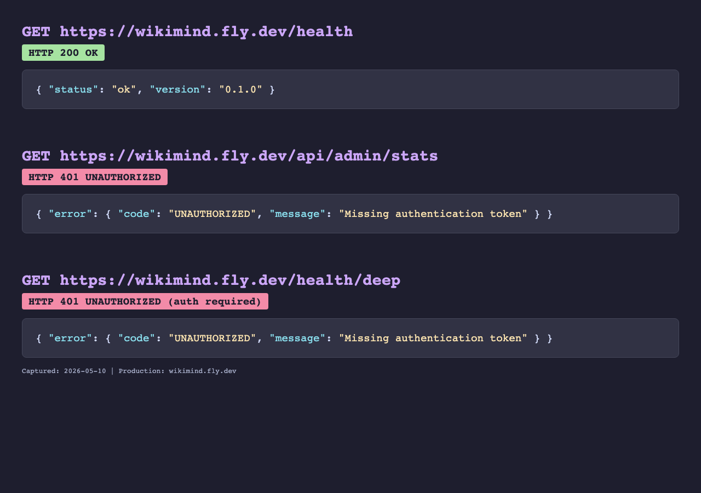

$ uv run pytest tests/unit/ tests/integration/ -q 1566 passed, 9 skipped, 77 warnings in 52.09s
$ FLY_APP_NAME=wikimind WIKIMIND_REDIS_URL=redis://localhost:6379 python -c "
from wikimind.jobs.background import _check_production_redis_guard
_check_production_redis_guard()
"
PASS: Production guard passes with Redis configured
$ FLY_APP_NAME=wikimind python -c "
from wikimind.jobs.background import _check_production_redis_guard
_check_production_redis_guard()
"
ProductionConfigError: Production environment (FLY_APP_NAME set) requires Redis.
Set WIKIMIND_REDIS_URL or REDIS_URL to a valid Redis URL.
Refusing to start with in-process fallback on Fly.io.
$ python -c " # no FLY_APP_NAME set
from wikimind.jobs.background import _check_production_redis_guard
_check_production_redis_guard()
"
OK: in-process fallback allowed (no Fly detected)
# Added to .github/workflows/deploy.yml before fly deploy:
- name: Validate required secrets
run: |
for var in ANTHROPIC_API_KEY JWT_SECRET_KEY GOOGLE_CLIENT_ID \
GOOGLE_CLIENT_SECRET WIKIMIND_REDIS_URL; do
if [ -z "${!var}" ]; then
echo "::error::Required secret ${var} is empty"
exit 1
fi
done

GET /health
{
"status": "ok",
"version": "0.1.0"
}
The /health/deep and /api/admin/stats endpoints correctly require authentication (HTTP 401), proving the auth middleware is active in production.
https://wikimind.fly.dev/healthblockedThe open-PR discovery run wrote ui-discovery.json for this page, but a fresh browser screenshot from production could not be taken because Chromium failed to launch in the current sandbox. Existing stored evidence above remains the last successful live capture.
Playwright Chromium launch failed: bootstrap_check_in ... Permission denied (1100)
fly deploy if WIKIMIND_REDIS_URL secret is missing/health to see if background mode is correct